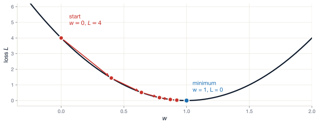
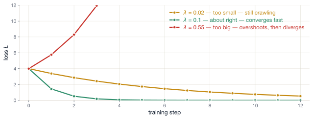
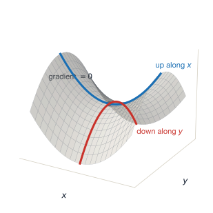

Lecture 4 — Turning a wrong network into a right one
August 6, 2026
≈ 5 min · shout it out
1. Yes — the product is defined. The inner dimensions match (3 and 3), and the outer dimensions give the shape of the result:
(2 \times 3)(3 \times 1) \rightarrow 2 \times 1
2. Let u = 2x + 1, so y = u^3. Then \frac{dy}{du} = 3u^2 and \frac{du}{dx} = 2:
\frac{dy}{dx} = 3u^2 \cdot 2 = 6(2x+1)^2
3. Nodes hold values and operations; edges carry each result forward into the next operation. And no cycles allowed: a cycle would make a value depend on itself, so the forward pass could never finish.
We have
We don’t have
Today’s job!
For a prediction \hat{y} and truth y, the loss L(\hat{y}, y) is a function whose value is:
For continuous outcomes (e.g. a regression):
L(\hat{y}, y) = (\hat{y} - y)^2
i.e. the squared error.
For binary outcomes (e.g. classify spam vs not):
L(\hat{y}, y) = -\big(y \ln \hat{y} + (1-y) \ln (1-\hat{y})\big)
i.e. the binary cross-entropy.
(We’ll come back to think about categorical outcomes later!)
Same formulas as the last slide — now read the numbers
Squared error
Squared error chases the big misses first, and is easily dominated by outliers.
Cross-entropy · true label y = 1
| model says \hat{y} | L = -\ln \hat{y} | |
|---|---|---|
| 0.9 | 0.11 | confident, right |
| 0.5 | 0.69 | no idea |
| 0.1 | 2.30 | confident, wrong |
| 0.01 | 4.61 | very confident, very wrong |
Cross-entropy punishes confident errors harder than uncertain ones
When y = 1, the penalty grows without limit as \hat{y} \to 0 (i.e. 0.01, 0.001, 0.00001 etc.) – and vice versa when y = 0 and \hat{y} \to 1.
A model that “hedges its bets” when it doesn’t know will score better than one that guesses boldly.
That is a design choice, baked into a formula and we can alter it, if we want.
One number, quietly doing two different jobs
Your model says \hat{y} = 0.7 for one voter. Two readings — both standard, both defensible:
A claim about the world
“Among voters who look like this one, 70% turn out.”
A frequency, in a reference class. The randomness is out there in the world.
Even a perfect model could not sharpen this.
Aleatoric — irreducible
A claim about the model
“I am 70% confident this voter turns out.”
A degree of belief. This voter votes or doesn’t — there is no 0.7 about them.
Better features or more data could sharpen it.
Epistemic — reducible
The awkward bit The loss cannot tell these apart. Cross-entropy just sees a number in (0,1); it is minimised, in expectation, by the true conditional probability P(y = 1 \mid \mathbf{x}).
So the maths is doing the first thing. We almost always talk as if it were the second.
\hat{y} = 0.5 means two opposite things
The number alone will not tell you which.
\hat{y} comes with no error bar
0.7 from a model trained on 50 cases and 0.7 from one trained on 50 million look identical.
The output is a point estimate of a probability — not a probability distribution over that estimate.
What you can check
Calibration. Take every case where the model said ≈0.7. Did about 70% of them turn out?
That tests the frequency reading, across a group. It says nothing about whether 0.7 was the right belief for any one voter — and that is usually the claim a reader cares about.
Be precise in your write-up about which reading you mean. “The model is 70% confident” and “70% of such voters turn out” are different sentences, and only one of them is what you fitted.
Back to yesterday’s turnout problem
Suppose one voter has x = 1, true outcome y = 2 (a fictional “turnout score”). Our (very wrong) model is a single linear neuron with w = 0, b = 0.
Forward pass:
(Here z is our prediction \hat{y} — for a single linear neuron they’re the same thing.)
Question Should we increase w or decrease w to reduce the loss?
Answer Increase w. If w were 2 (true relationship), our prediction would be z = 2, and loss would be 0.
So the question becomes: how can an algorithm know that?
The honest question from the last slide
Guess and check
Try 100 values of w, keep the best.
Hopeless past a handful of parameters.
Numerical differentiation
Nudge each parameter and see what happens:
\frac{\partial L}{\partial w} \approx \frac{L(w + h) - L(w)}{h}
What we want
For a model with k parameters:
It turns out, even with k \gt 1\text{ million}, we can do this with just two passes!
The gradient of the loss with respect to each parameter
For each weight w and bias b, we want: \frac{\partial L}{\partial w}, \qquad \frac{\partial L}{\partial b}
A negative \frac{\partial L}{\partial w} means: “increase w to reduce L.”
A positive \frac{\partial L}{\partial w} means: “decrease w to reduce L.”
The size of the partial tells us how strongly the loss responds — i.e. how big a step we can take.
Computing this from the full expression of L is painful, but…
Take our linear perceptron z = wx + b, and append loss nodes for L = (z - y)^2:
Name the nodes
Reading the graph left to right, each circle is one operation with its own output:
The loss is just another node in the graph. Now there’s a single scalar at the end — the perfect target for reverse-mode autodiff.
We want \frac{\partial L}{\partial w}.
Walking the graph right to left, we apply the chain rule one node at a time.
Starting at L: \frac{\partial L}{\partial L} = 1 (every node’s gradient w.r.t. itself is 1).
The squared step. L = d^2 so \frac{\partial L}{\partial d} = 2d.
We got this using only the local derivative of **2 — independent of everything else.
We can continue this back through each node using only the local derivative at each step
Working backwards through the linear perceptron + squared-error loss
\begin{aligned} \frac{\partial L}{\partial L} &= 1 \\[2pt] \frac{\partial L}{\partial d} &= 2d & & & \quad (\text{derivative of } d^2) \\[2pt] \frac{\partial L}{\partial z} &= \frac{\partial L}{\partial d} \cdot \frac{\partial d}{\partial z} &= \frac{\partial L}{\partial d} \cdot 1 &= 2d & \quad (d = z - y) \\[2pt] \frac{\partial L}{\partial a} &= \frac{\partial L}{\partial z} \cdot \frac{\partial z}{\partial a} &= \frac{\partial L}{\partial z} \cdot 1 &= 2d & \quad (z = a + b) \\[2pt] \frac{\partial L}{\partial w} &= \frac{\partial L}{\partial a} \cdot \frac{\partial a}{\partial w} &= \frac{\partial L}{\partial a} \cdot x &= 2d \cdot x & \quad (a = w \cdot x) \\[2pt] \frac{\partial L}{\partial b} &= \frac{\partial L}{\partial z} \cdot \frac{\partial z}{\partial b} &= \frac{\partial L}{\partial z} \cdot 1 &= 2d \end{aligned}
Tip
Every step uses only: the local operation’s derivative + the gradient flowing in from the right. That’s why this scales — each node only “talks” to its neighbours.
Plug in our turnout example: x = 1, y = 2, w = b = 0.
Forward: a = 0, z = 0, d = -2, L = 4.
Backward
\frac{\partial L}{\partial w} = 2d \cdot x = 2(-2)(1) = -4
\frac{\partial L}{\partial b} = 2d = -4
The signal \frac{\partial L}{\partial w} = -4 < 0 — so increasing w will decrease the loss. Just what we hoped.
The algorithm found this without trying every value 😎
One click, one node — the gradient flows right to left through yesterday’s graph
Each click is one application of the chain rule: read the gradient arriving from the right, multiply by one local derivative, write the result into the node.
Every gradient lands on -4 here only because each local derivative after the first (2d) is 1 — and x = 1. Make x = 3 and \frac{\partial L}{\partial w} = 2d \cdot x becomes -12, while \frac{\partial L}{\partial b} stays at -4.
Stop & check
Try it yourself (look at the derivatives cheatsheet!) Suppose we wrap the linear output in a sigmoid activation: z = \sigma(wx + b) where \sigma(u) = 1/(1+e^{-u}).
What single thing changes in the backward walk?
Answer Exactly one local derivative changes. At the \sigma node: \frac{\partial z}{\partial \text{(pre-activation)}} = \sigma'(u) = \sigma(u)(1 - \sigma(u)) — a value between 0 and 0.25. That extra factor gets multiplied into the chain wherever the gradient flows back through the activation.
Everything else is unchanged. The whole algorithm is robust to swapping in any operation we can differentiate.
In real networks, the same value gets used in multiple downstream operations.
Branching rule. When a value x goes to multiple downstream nodes, its gradient is the sum of contributions from each branch:
\frac{\partial d}{\partial x} = \underbrace{\frac{\partial d}{\partial a} \cdot \frac{\partial a}{\partial x}}_{\text{top branch}} + \underbrace{\frac{\partial d}{\partial c} \cdot \frac{\partial c}{\partial x}}_{\text{bottom branch}}
This is the only extra rule beyond the chain rule. Everything else is bookkeeping.
With numbers
Here the branches are a = 2x and c = 4x, and d = a + c. So the local derivatives are \frac{\partial a}{\partial x} = 2, \frac{\partial c}{\partial x} = 4, and \frac{\partial d}{\partial a} = \frac{\partial d}{\partial c} = 1. Summing the two branches:
\frac{\partial d}{\partial x} = \underbrace{1 \cdot 2}_{\text{top}} + \underbrace{1 \cdot 4}_{\text{bottom}} = 6
Sending loss gradients from right to left
We walk backwards through a graph, applying the chain rule at every node, and reading off \frac{\partial L}{\partial w} — without ever expanding the full expression of L.
This is called reverse-mode automatic differentiation — or, more normally, backpropagation.
It is the single algorithm that powers every modern neural network. It was published by Rumelhart, Hinton & Williams in 1986 (Rumelhart et al., 1986).
We will use backpropagation every single day for the rest of the course.
Reverse-mode has a mirror image — and the choice between them is just counting passes
Forward-mode
Pick one parameter, say w. Push “how does a nudge to w ripple onwards?” through the graph, left to right, alongside the values.
Reverse-mode
Start at the one output, L, and walk right to left.
Match the walk to the shape of the function A network is a function with millions of inputs (the parameters) and one output (the loss).
That is the two-pass promise from earlier, kept. If you ever meet the opposite shape — one input, many outputs — forward-mode is the right tool instead.
≈ 10 min · pen and paper, in pairs
The graph
y = (3x + 2)(x - 1) \quad \text{with } x = 4.
Break it into operations:
Compute, step by step:
Forward
a = 12,\ b = 14,\ c = 3,\ y = 42.
Backward
\dfrac{\partial y}{\partial y} = 1.
\dfrac{\partial y}{\partial b} = c = 3 (since y = b \cdot c).
\dfrac{\partial y}{\partial c} = b = 14.
\dfrac{\partial y}{\partial a} = \dfrac{\partial y}{\partial b} \cdot 1 = 3.
x flows into two branches — through a and through c:
\dfrac{\partial y}{\partial x} = \dfrac{\partial y}{\partial a} \cdot 3 + \dfrac{\partial y}{\partial c} \cdot 1 = 3 \cdot 3 + 14 \cdot 1 = 23.
Sanity check
y = (3x+2)(x-1) = 3x^2 - x - 2. \dfrac{dy}{dx} = 6x - 1 = 23 at x = 4. ✅
For any parametric model, training is:
1. Measure
Compute the loss on a training example (or batch of examples).
2. Differentiate
Compute \nabla L — the gradient of the loss w.r.t. every parameter.
3. Update
Step each parameter in the direction that reduces L.
Repeat thousands of times. That’s deep learning.
Forward pass
Walk graph left → right.
For each node:
End: a scalar loss.
Backward pass
Walk graph right → left.
For each node:
End: \nabla L for every parameter.
Tip
Notice that the forward pass stores values; the backward pass reads them. This memory cost is why GPUs need a lot of RAM during training.
For each parameter \theta, do: \theta \leftarrow \theta - \lambda \frac{\partial L}{\partial \theta}
Back to our turnout example w = 0, b = 0, x = 1, y = 2.
After the backward pass, we had \frac{\partial L}{\partial w} = -4 and \frac{\partial L}{\partial b} = -4. With \lambda = 0.1, what are w and b after one step?
Answer w_\text{new} = 0 - 0.1 \cdot (-4) = 0.4. b_\text{new} = 0 - 0.1 \cdot (-4) = 0.4.
Forward pass with new parameters: z = 0.4 + 0.4 = 0.8 \Rightarrow L = (0.8 - 2)^2 = 1.44.
The loss fell from 4 to 1.44. In one step.
Same example, repeated
| step | w | b | z = wx + b | L |
|---|---|---|---|---|
| 0 | 0.00 | 0.00 | 0.00 | 4.00 |
| 1 | 0.40 | 0.40 | 0.80 | 1.44 |
| 2 | 0.64 | 0.64 | 1.28 | 0.52 |
| 3 | 0.78 | 0.78 | 1.57 | 0.19 |
| 4 | 0.87 | 0.87 | 1.74 | 0.07 |
| 5 | 0.92 | 0.92 | 1.84 | 0.02 |
The loss falls after each step, simply repeating the same forward/backward/update sequence.
Notice that the loss reduction decreases per epoch – suggesting we are approaching some limit (in this case we should hit zero exactly!)
w and b start equal and get the same gradient, so they move together — one axis shows both

Each arrow is one forward → backward → update cycle. The gradient tells us which way is downhill and how steep it is, so the steps are large where the curve is steep and shrink as we approach the bottom.

The red line leaves the top of the chart and never comes back. A diverging loss is almost always the learning rate. It’s the first thing to halve when training blows up.
Our example was easy
A single linear neuron with squared error gives a convex loss – it’s “bowl-shaped” with a single minima.
Real networks are not
By stacking layers and using non-linear activations, the surface becomes non-convex
There is no guarantee you find the global minimum. In general, you don’t.
Why we do it anyway Empirically, for large networks, descending to local minima tends to be good enough.
Deep learning is therefore experimental: it works far better than anyone could prove it should!
In two dimensions we picture getting stuck in a valley — a local minimum.
In a million dimensions, being a minimum is a demanding job. At a critical point — a point where the gradient is zero — the loss must curve upward in every one of a million directions.
Count the up/down patterns of curvature:
In a big network, almost every critical point has at least one downhill direction — a saddle, not a minimum (Dauphin et al., 2014).

The surface z = x^2 - y^2: uphill along x, downhill along y — the shape of a horse’s saddle.
Near a saddle point the surface is nearly flat, so the gradient is small — and small gradients mean tiny steps.
Gradient descent doesn’t get trapped there (a downhill direction exists). It stalls.
The accidental fix Mini-batch gradients are noisy — each batch of examples gives a slightly different gradient. Near a saddle, that noise shoves the parameters off the flat ridge and onto the downhill direction, and descent resumes.
The noise we accept to keep steps cheap — mini-batch gradient descent, two slides from now — also helps the optimiser escape saddles.
Suppose we have two observations — (x = 1, y = 2) and (x = 3, y = 6) — what should we do?
Stochastic gradient descent (SGD)
Update parameters using one example at a time.
Full-batch gradient descent
Compute the gradient by averaging over all training examples, then take one step.
Compute the gradient on a small batch (say, 32 examples), then average, then make an update.
This is what every modern training script does.
Note
Vocabulary check. “SGD” in modern practice usually means mini-batch SGD — even though strictly speaking the original SGD used one example at a time.
A common bug
As with “regular” ML, we must not leak validation/test data into training. If you do, the model looks great, but collapses out of sample.
≈ 8 min · pen and paper, in pairs
The model and one observation
A linear perceptron: z = wx + b, \quad L = (z - y)^2.
Current parameters: w = 0.5, b = 0.1. Example: x = 2, y = 3. Learning rate \lambda = 0.1.
Compute
Forward
z = 0.5 \times 2 + 0.1 = 1.1. d = z - y = 1.1 - 3 = -1.9. L = (-1.9)^2 = 3.61.
Backward
\frac{\partial L}{\partial w} = 2d \cdot x = 2(-1.9)(2) = -7.6. \frac{\partial L}{\partial b} = 2d = -3.8.
Update with \lambda = 0.1
w \leftarrow 0.5 - 0.1(-7.6) = 1.26. b \leftarrow 0.1 - 0.1(-3.8) = 0.48.
Re-forward
z = 1.26(2) + 0.48 = 3.0 → L = (3.0 - 3)^2 = 0.
We hit the target in one step — because the loss is quadratic and we happened to land exactly. In real problems, expect dozens to thousands of steps.
Problems
The modern fix
Adaptive optimisers adjust \lambda per parameter — most often using Adam (Kingma, 2014) and its sibling AdamW.
We’ll use these in every PyTorch model from Day 5.
Plain SGD forgets everything between steps. Momentum keeps a running velocity v, and steps along that instead of the raw gradient:
v \leftarrow \gamma v + g, \qquad w \leftarrow w - \lambda v
Worked example · \gamma = 0.9, \lambda = 0.1, start at w = 1, v = 0; the gradient is g = 1 at both steps
Step 1: v = 0.9(0) + 1 = 1, so w = 1 - 0.1(1) = 0.9.
Step 2: v = 0.9(1) + 1 = 1.9, so w = 0.9 - 0.1(1.9) = 0.9 - 0.19 = 0.71.
Plain SGD takes two steps of 0.1 and reaches only 0.8. Momentum’s second step is nearly twice its first.
When the gradient agrees with itself step after step, the velocity builds — and the steps grow.
Now suppose the gradient oscillates: g = +1 on step 1, then g = -1 on step 2.
Same setup · \gamma = 0.9, \lambda = 0.1, start at w = 1, v = 0
Step 1 (g = +1): v = 0.9(0) + 1 = 1, so w = 1 - 0.1(1) = 0.9.
Step 2 (g = -1): v = 0.9(1) - 1 = -0.1, so w = 0.9 - 0.1(-0.1) = 0.91.
Plain SGD would bounce all the way back to 1.0. Momentum moves just 0.01 — the +1 and the -1 nearly cancel inside v.
What momentum buys us Agreement across steps builds speed. Disagreement cancels out, so oscillations are damped.
One problem from two slides ago remains: every parameter still shares the single step size \lambda. Adam — next slide — combines momentum with a step size per parameter.
For each parameter \theta, on each step:
Note
The point isn’t the formula — it’s that the update is adaptive per parameter. Parameters with large recent gradients get smaller scaled steps; parameters with small gradients get relatively larger ones.
In practice, default to Adam with \lambda = 10^{-3} for most projects. We’ll do exactly that next week.
Every PyTorch training script you’ll ever read or write looks like this. Five lines. Everything else is detail on:
model is (the architecture).loss_fn is.optimizer is.We spend the next eight lectures filling in those three blanks.
Critical detail: PyTorch accumulates gradients across loss.backward() calls by default.
You must call optimizer.zero_grad() at the start of every step, or your gradients will be the sum of all previous steps’ gradients!!
This is a very common bug in PyTorch code.
Enormous gradients are a tell-tale sign
Check whether you’re zeroing them. It is almost always this.
Stop & take stock
You can now:
You understand the algorithm that runs every neural network.
Three weeks ago this would have been a black box. Today you can write it.
An aside on a piece of work you can read
MIDAS (Lall & Robinson, 2022) is a missing-data imputation method built on a denoising autoencoder trained with backprop and Adam.
The deep-learning idea you just learned is applicable to social-science problems, not just to ImageNet. We come back to MIDAS on Day 7.
Goals
Take yesterday’s Value graph library and add gradients.
You will implement:
grad attribute on each Value, initialised to 0.+, *, **), a _backward hook that:
grad.backward() method on the final node that walks the graph in reverse topological order, calling each _backward.Deliverable. A working autodifferentiation library, in <100 lines of Python.
You’ll then use it to train a tiny one-layer model on a small dataset — and watch the loss fall.
This is Karpathy’s micrograd. We’ve walked it deliberately.
Lecture 5 — Feed-forward networks in PyTorch
Tonight:
ME324 · AI and Deep Learning · LSE Summer School